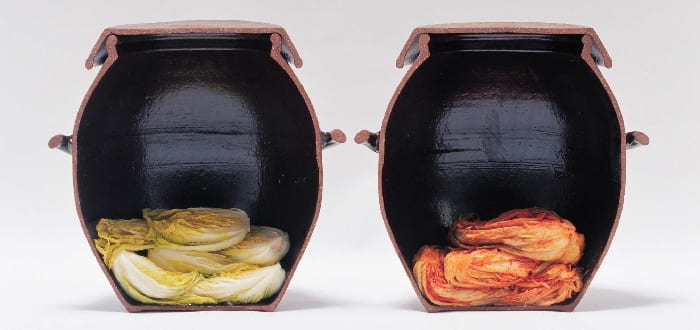
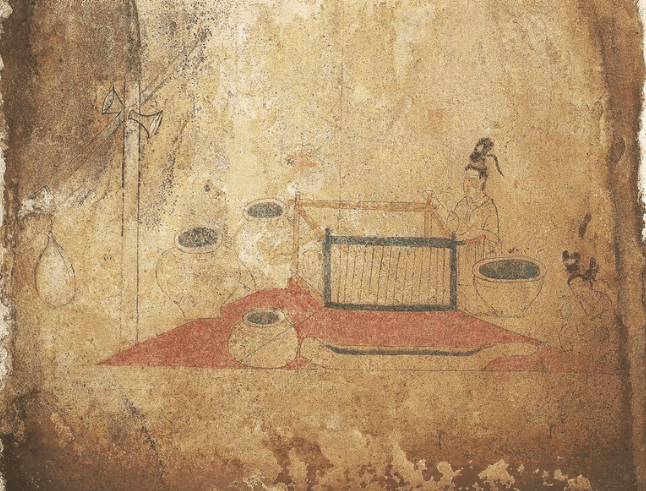
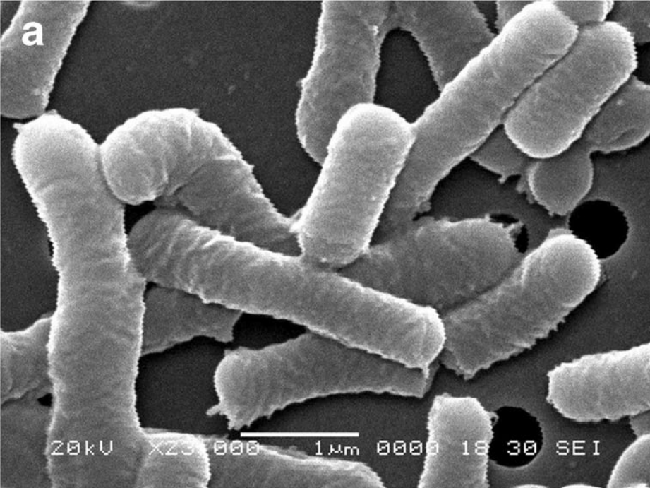
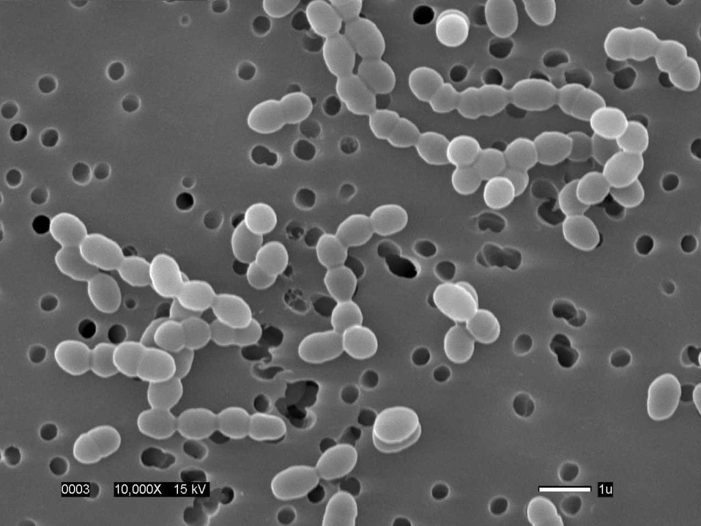
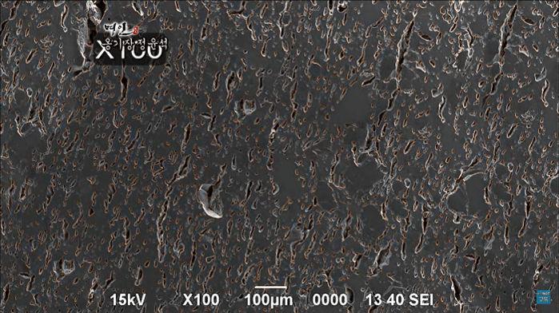
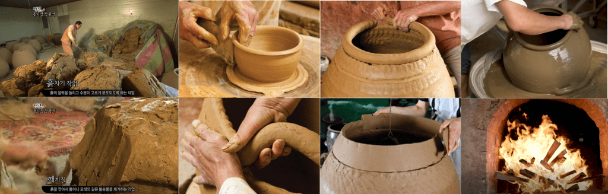
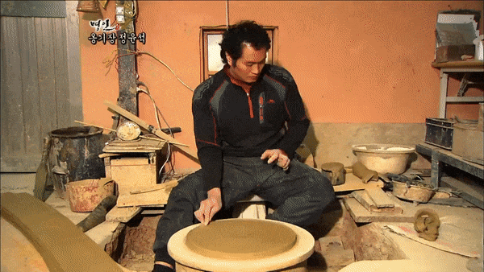
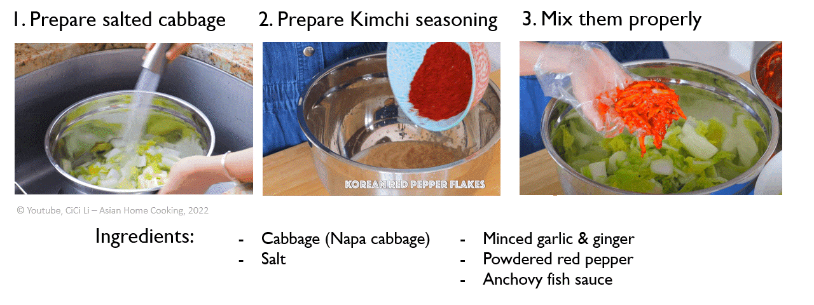
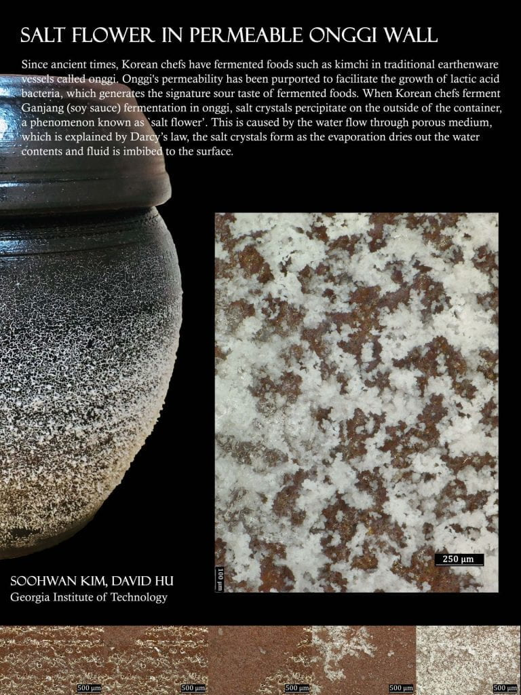

Past Project
Kimchi Fermentation in Permeable Korean Earthenware Onggi
Since ancient times, Korean chefs have fermented foods such as kimchi, gochujang, and soy sauce in traditional fermentation vessels called Onggi. Onggi is purported to provide gas permeability which facilitates the growth of lactic-acid-forming bacteria. In this experimental study, we perform time-lapse videography and carbon dioxide measurement in various fermentation vessels, including Onggi. Counter-intuitively, we find that the permeable wall of Onggi does not restrict the growth rate of bacteria but can limit their maximum number. The porosity thus acts as a safety valve for bacteria growth by blocking the entry of external contaminants without mechanical components.
Onggi as a traditional fermentation vessel


Onggi markets and fabrication context


Lactic acid bacteria and pore structure



Manufacturing process and salt flower observations




Videos and references
Kimchi Fermentation Time-lapse Video
Time-lapse of Salt Flower in Onggi
Time-lapse of Salt Flower in a Microscopic View
Time-lapse of Salt Flower in a Microscopic View 2
3D-Visualized Onggi Pores using CT Scan
